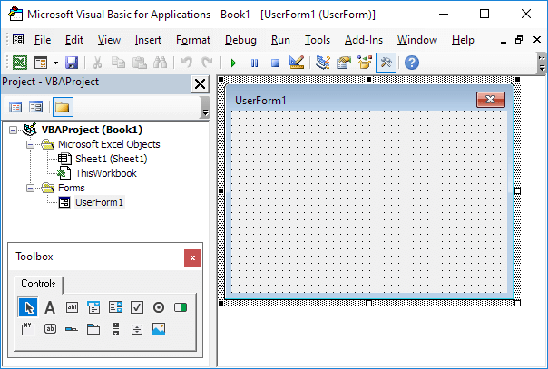

Progress Indicator
Below we will look at a program in Excel VBA that creates a progress indicator. We've kept the progress indicator as simple as possible, yet it looks professional. Are you ready?
The Userform we are going to create looks as follows:
To create this Userform, execute the following steps.
1. Open the Visual Basic Editor. If the Project Explorer is not visible, click View, Project Explorer.
2. Click Insert, Userform. If the Toolbox does not appear automatically, click View, Toolbox. Your screen should be set up as below.

This Userform only consists of three controls. A frame control and two label controls.
3. Add the frame control. You can do this by clicking on Frame from the Toolbox. Next, you can drag a frame control on the Userform. You need to change some properties of this frame control. Right mouse click on the frame control, and then click on Properties. Empty the Caption field, set the Height to 24 and Width to 204.
4. Add the first label control and place it in the Frame control. Right mouse click on the label control, and then click on Properties. Change the name to Bar, BackColor to Highlight, empty the Caption field, set the Height to 20 and Width to 10.
5. Add the second label control and place it above the Frame control. Right mouse click on the label control, and then click on Properties. Change the name to Text and change the Caption to '0% Completed'.
6. Change the caption of the Userform to Progress Indicator.
Once this has been completed, the result should be consistent with the picture of the Userform shown earlier.
7. Place a command button on your worksheet and add the following code line to show the Userform:
UserForm1.Show
End Sub
If you have gone through the other Userform examples on this site, you know that this is the time to create the Sub UserForm_Initialize. This Sub runs automatically whenever the Userform is loaded. Thus, when you use the Show method for the Userform, the code will automatically be executed. Instead of the Sub UserForm_Initialize, we create the Sub UserForm_Activate. By using this sub, Excel VBA can update the Userform to show the progress of the macro.
8. Open the Visual Basic Editor.
9. In the Project Explorer, right click on UserForm1 and then click View Code.
10. Choose Userform from the left drop-down list. Choose Activate from the right drop-down list.
11. Add the following code line:
code
End Sub
Explanation: this sub calls another sub named code we are going to create in a minute. Confused? You can go through our Function and Sub Guide to learn more about subs. If you are in a hurry, just execute the following steps and you will be fine.
12. Place the sub named code into a module (In the Visual Basic Editor, click Insert, Module). This is just an example. This is THE place to add your own code when you want to use this progress indicator for your own macro. The code looks as follows.
Dim i As Integer, j As Integer, pctCompl As Single
Sheet1.Cells.Clear
For i = 1 To 100
For j = 1 To 1000
Cells(i, 1).Value = j
Next j
pctCompl = i
progress pctCompl
Next i
End Sub
Explanation: first, we initialize some variables. Next, we clear sheet1. We use a double loop to show the values from 1 to 1000 in the first 100 rows of the worksheet. This will keep Excel VBA busy for a while and gives us the opportunity to see the progress of the macro. The variable pctCompl (abbreviation for percentageCompleted) measures the progress of the macro. Finally, we call another sub named progress and pass the value of the variable pctCompl to update the Userform. This way we can see the progress of the macro!
13. Add another sub named progress. The code looks as follows:
UserForm1.Text.Caption = pctCompl & "% Completed"
UserForm1.Bar.Width = pctCompl * 2
DoEvents
End Sub
Explanation: the first code line changes the caption of the first label control. The second code line changes the width of the second label control. Add DoEvents to update the Userform.
14. Exit the Visual Basic Editor and click the command button on the sheet:
Result:
Note: for this macro, we used the variable i to measure the progress. For example, at row 11, 10% is completed. This may be different for your macro. The technique of passing the value of the variable pctCompl to the sub progress to update the Userform remains the same.